神戸市西区の
西光寺。
大きなお地蔵さんを擁する寺で、もう10年以上前から行きたかった寺のひとつだ。
では何故行かなかったかというと
微妙に面倒な場所だったからです……。
偶々近くに用事があったので寄ってみることにした。
今までお座成りにしてスミマセンでした。
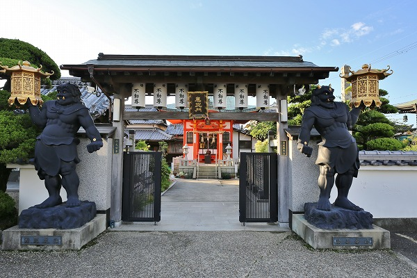
大きなお地蔵さんがいらっしゃるというインフォメーション以外はほとんど予備知識なしの状態で飛び込んだわけだが、
これがなかなかどうして。
一言では言えない独特な雰囲気の寺であった。
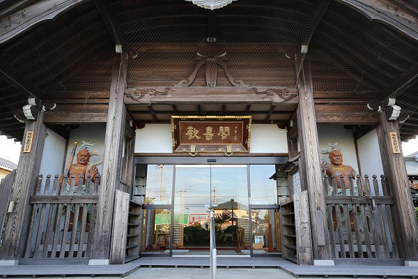
ひとつひとつのエレメントを紹介してもいいのだが、それによってこの寺の本質を指摘出来るかというと甚だ心許ない。
つまりこの寺の最大の特徴は
混沌そのものなのだ。
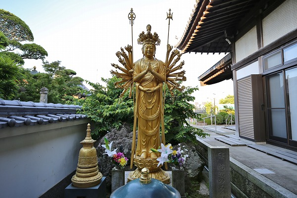
例えばこのような
千手観音がいきなり現れたりするのだが、それはあくまでもこの寺の一部であって、全てではない。
むしろこのような立派な千手観音像が境内の片隅に追いやられている状況こそがこの寺の特徴と言えよう。
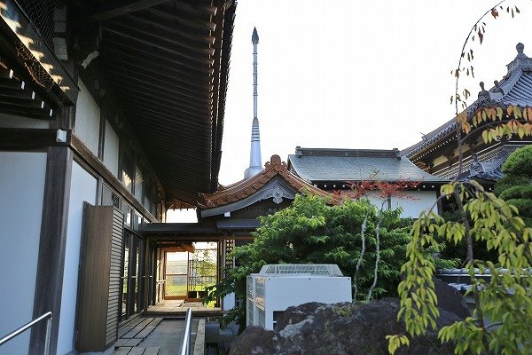
その向かいに建つ
万国戦争犠牲者慰霊世界平和祈願パゴダ塔。
これも境内の奥まったところにあり、その全体像すらよく見えない。
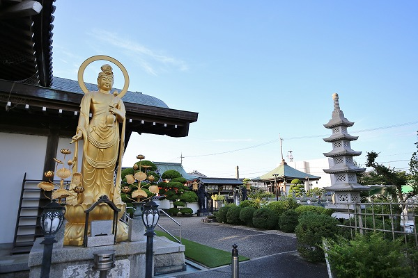
要するにこの寺は敷地の割に異様に仏像や堂宇が多いのである。
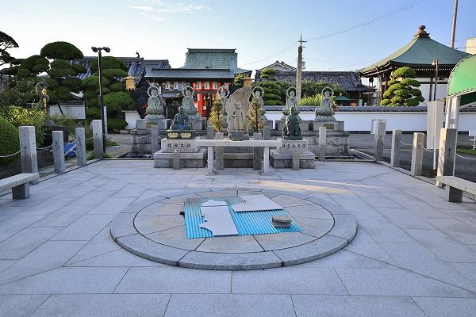
しかもひとつひとつが平均点以上のアベレージをたたき出している、という感じ。
ホームランバッターはいないが
異様に送りバンドで塁を溜めていくタイプのお寺なのだ。
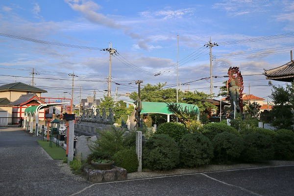
緑のテント屋根とか人工芝とか、そんなに珍しくもないけどどこか不思議、というかお寺っぽくない感じ。
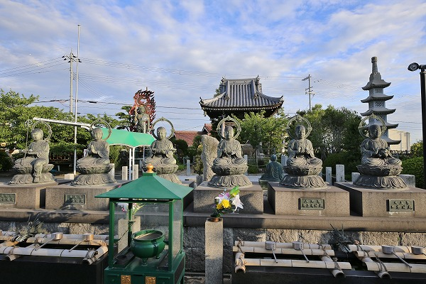
六地蔵も立派なのだが、残念ながらあまり目立たない。
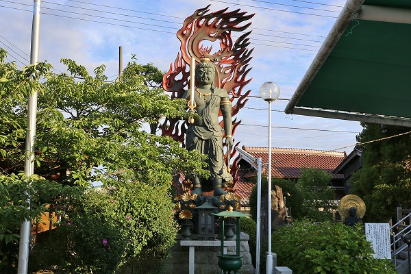
その中でも中軸を担う不動明王像。
ただ、周辺に仏像などがたくさんあって、埋もれちゃってる感じが残念だ。
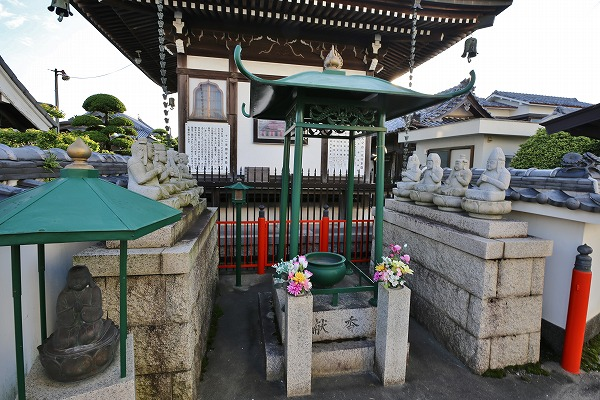
この辺も堂宇や仏像が密集していて常にツーアウト2塁3塁な感じ。
余りにも堂宇が多すぎてあちこちでお参りした結果、どこが本堂だったのかも記憶が曖昧です…。
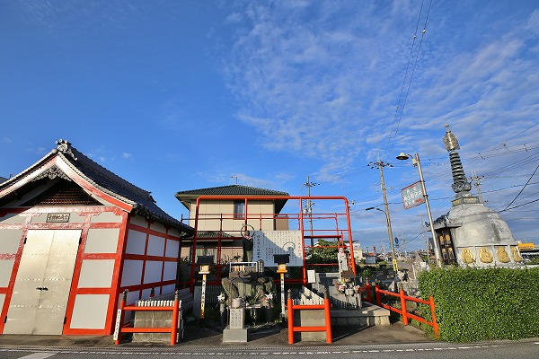
境内の外、車道を挟んだ向かいにも不思議なエリアが続いている。
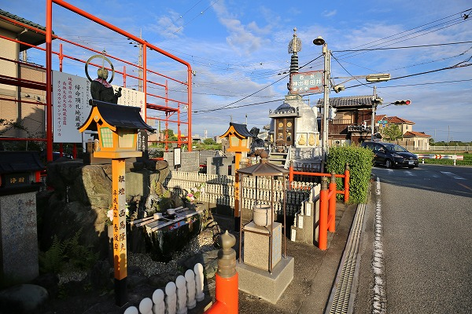
水子供養エリアだ。
水子地蔵の背後の赤いフレームとかがこの寺の
必要以上のお手盛り感を象徴しているように思える。
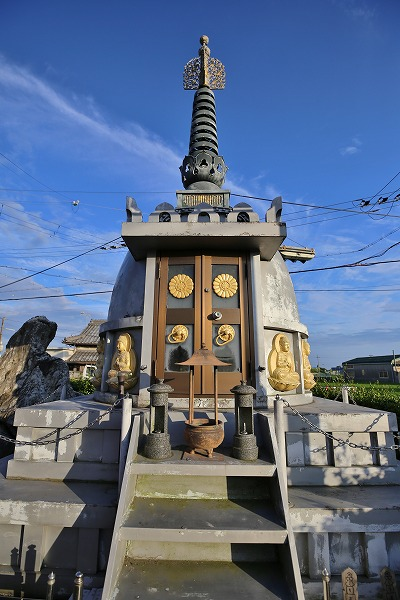
丁度車道の曲がり角の部分には
万霊供養塔が建っている。
その向かいにこの寺のキング、
万霊供養大地蔵尊がいらっしゃった。
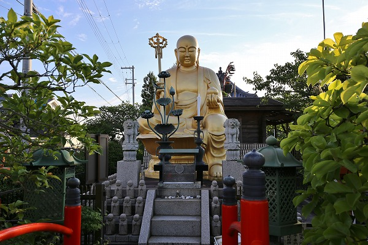
昭和58年に開眼したお地蔵さん。
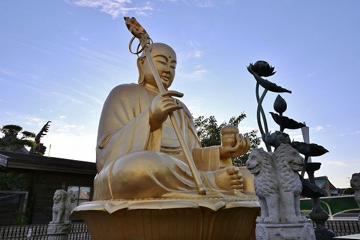
サイズとしてはギリ大仏（座像で2.4ｍ）、というところだろう。
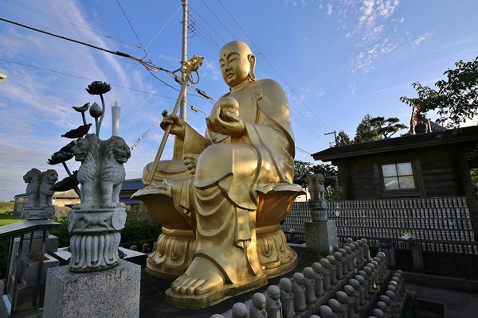
左足だけ下におろした半跏スタイル。
事があればいつでもカチ込みますぜ、的なポーズである。
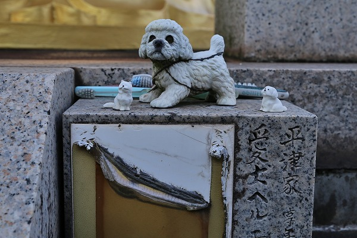
足元には狛犬ならぬ可愛いワンちゃんが。
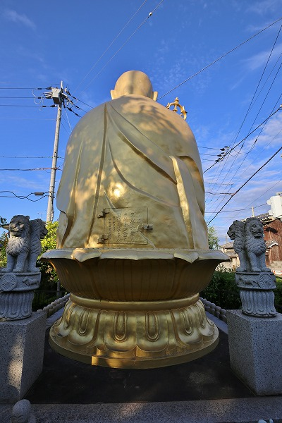
背中には扉がある。
胎内には万霊供養を祈願した石が奉納されているそうな。
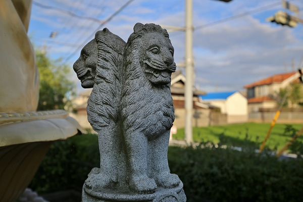
地蔵さんの四隅には不思議な獅子、というかライオン像が。
何かの魔除けなのだろうか。※1
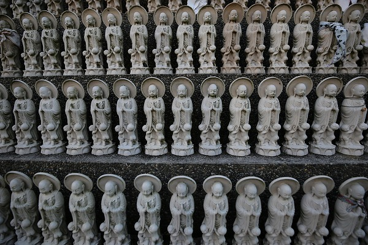
そして背後には無数の地蔵群。
特筆すべきはこのお地蔵さんのポジジョン。
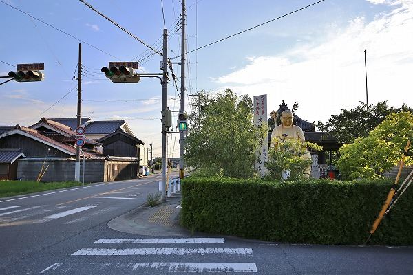
この寺の最大の見どころと言ってもいい巨大なお地蔵さんが境内の一番隅にあって、しかも本堂に背を向けた格好になっているのはどういう事だろう？
これは私見だが、このお地蔵さんは目の前の交差点の交通安全を祈願し建立したのではなかろうか。
奇しくも向かいにある万霊供養塔の前には交通安全地蔵が建っている。
普通ならこのような巨大な仏像は寺院の興隆を見せつけるように本堂の脇や前にこれ見よがしに建てるところだ。
ところがこのお地蔵さんはお寺から見たら片隅に建っている。
でも、外から見たら信号のあるＴ字路を見守るように鎮座しているのだ。
これは近隣の住民を見守るために建立した、という事なのだろう。
そんな心意気をこのお地蔵さんから感じたのであった。
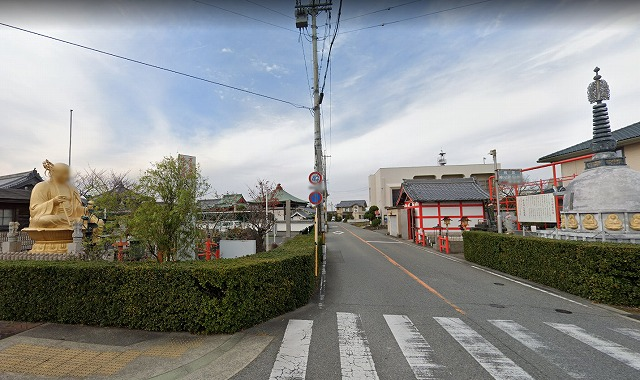
↑グーグルマップのストリートビューで見るとこんな感じ。お地蔵さんの顔にボカシがかかってるんだあ。
結局判ったような判らなかったような不思議なお寺だった。
でもしばらくすると私はこのお寺のこの
良く判らない感じこそがここの特徴でもあり、私のハートを惹きつけているのではなかろうか、と思うようになってきた。
私は様々な神社仏閣を巡ってきた。その数は数千にも及ぶ。
中には偶々出会う寺社もあるが、事前にリサーチして訪問する場合がほとんどだ。
その中で訪問する決め手として何か面白いモノがある、という条件と同じくらい重要視しているのが
「違和感」なのだ。
何とも言えないけど違和感だけは半端じゃない、そんな寺もよく訪問してきたものだ。
最近はネットのおかげでピンポイントで面白いモノが手に取るように確認出来る事が増えたので、ある意味確認作業のような取材が増えてきた。
それはそれで便利で効率的なのだが、ここのような違和感だけが先行するお寺は実際に行ってみないと判らない。
しかも行ってみてもその違和感を画像や文章だけで伝えるのは難しい。
でもよくよく考えると初期のころのこのサイトってそんなところばっかり紹介していたような気がするなー。
長年やってるとキャッチーなポイントがある寺社を紹介してしまいがちだが、このサイトで本当に伝えたいのはここのお寺のように混沌としていて一見判りにくいけど、でも過剰なまでに信仰心にあふれた、それでいてあふれすぎて普通の寺と一線を画する光景が出現しちゃったところなのです。
このお寺を訪れて久し振りに初心に帰らせていただいたような気分になったよ。感謝。
※1…当サイトの読者の埼玉の酔仙さん（
埼玉の酔仙ブログ）によるとこのライオン像はインドで発見された「アショーカの獅子柱頭」を象ったものだそうです。
インドの国章に採用されるほど有名なものだとか。
ご指摘ありがとうございました。